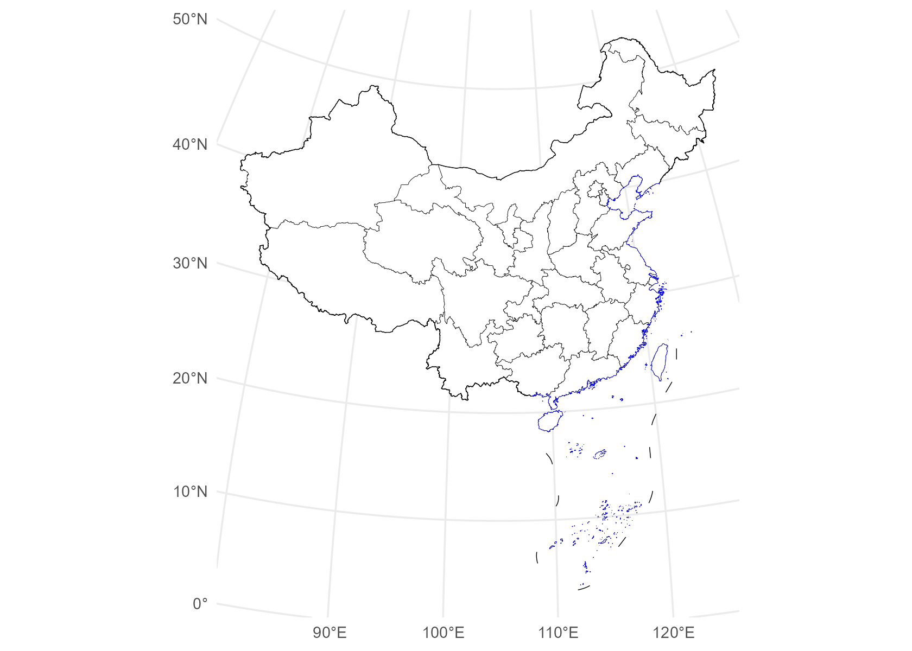
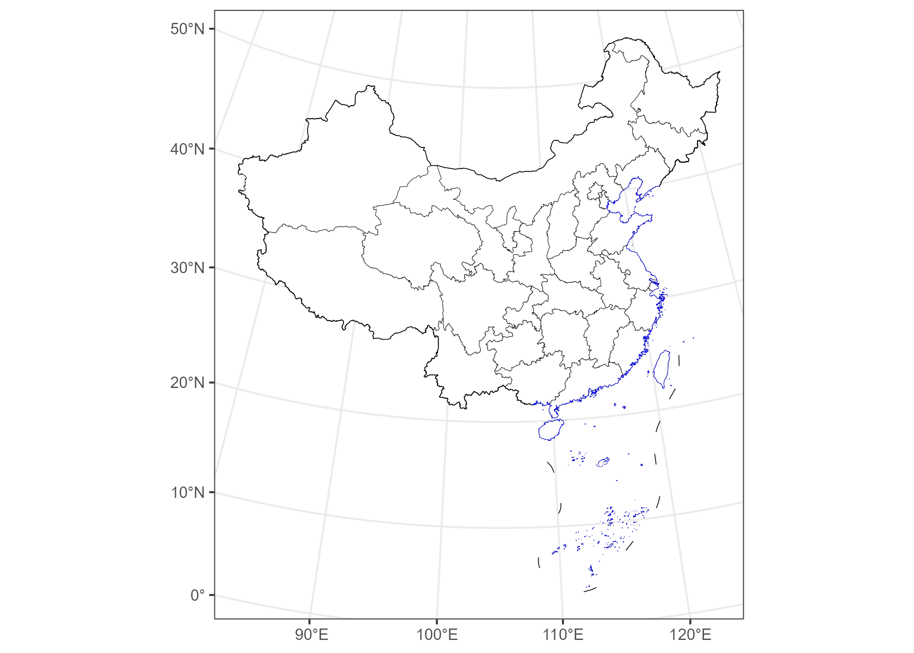
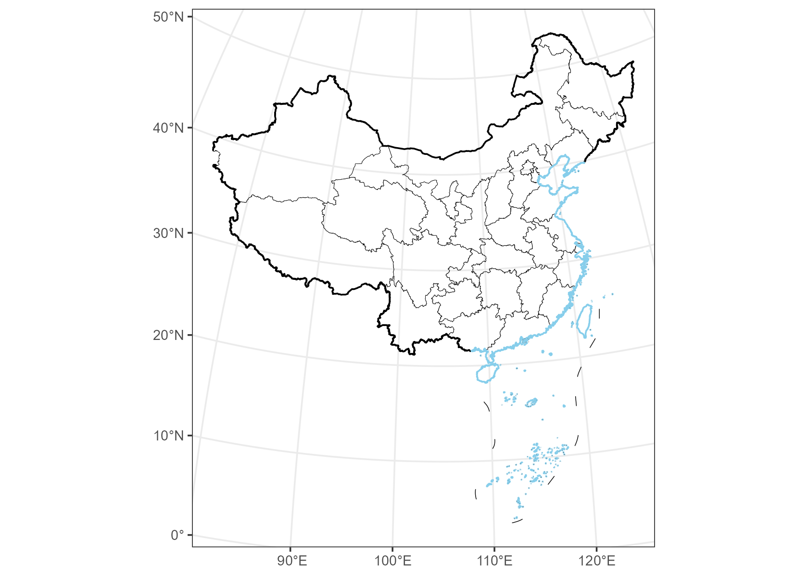
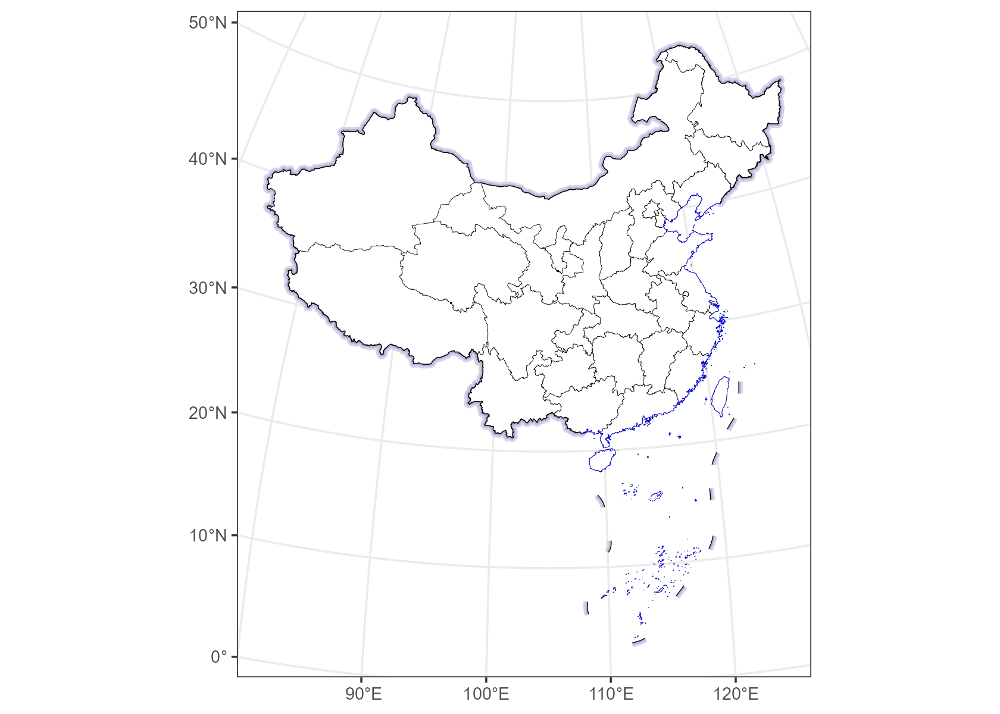

ggmapcn is a ggplot2 extension package for visualizing maps of China and the world with customizable projections and cartographic styling.
ggmapcn provides default boundary, world map, elevation, and vegetation datasets for direct use by its mapping functions. Some files are distributed in the installed package; larger files are hosted in the companion ggmapcn-data repository. check_geodata() reuses local copies and automatically retrieves missing default files when needed.
If a required file cannot be retrieved, check_geodata() returns NA for that file. Mapping functions require the corresponding data to be available and may report an error if it is missing. To work offline, obtain the files in advance and place them in a location searched by check_geodata().
Installation
Install the released version from CRAN:
install.packages("ggmapcn")The development version is also available from GitHub:
# install.packages("devtools")
devtools::install_github("Rimagination/ggmapcn", force = TRUE)Data Management with check_geodata()
The package’s default datasets include China_sheng.rda, world_countries.rda, and gebco_2024_China.tif. China_sheng.rda is distributed in the installed package. The larger world map and raster files are supplied through the companion data repository and retrieved as needed.
The provincial dataset uses name for English names, name_cn for Chinese names, and gb for the source administrative codes. In older versions, name contained Chinese names and the English field was called name_en. Update filters and joins accordingly; city- and county-level fields may differ.
check_geodata() automatically:
- searches for existing files in:
- user-specified
local_dirs - explicitly refreshed copies in the user cache, while their bundled files remain unchanged
- the package
extdatadirectory - the user cache and the legacy data directory
- user-specified
- downloads missing files from mirrors (jsDelivr and GitHub) to
tools::R_user_dir("ggmapcn", "cache"), without writing to the installed package - verifies checksums when available
- retries on failure and supports resume capability
- returns
NAinstead of errors when mirrors cannot be reached
To check and retrieve the provincial dataset:
check_geodata("China_sheng.rda")To retrieve explicitly the datasets used by geom_world():
check_geodata(c(
"world_countries.rda",
"world_coastlines.rda",
"world_boundaries.rda"
))If your network cannot access cdn.jsdelivr.net or raw.githubusercontent.com, you may manually download the files and place them in a directory passed to local_dirs.
Usage Examples
1. Basic Map of China
library(ggplot2)
library(ggmapcn)
ggplot() +
geom_mapcn() +
geom_boundary_cn() +
theme_minimal()
2. Custom Projection (Albers)
ggplot() +
geom_mapcn(
crs = "+proj=aea +lat_1=25 +lat_2=47 +lat_0=0 +lon_0=105 +datum=WGS84",
fill = "white",
color = "black",
size = 0.7
) +
geom_boundary_cn() +
theme_bw()
3. Adding Mainland Borders and Coastlines
ggplot() +
geom_mapcn(fill = NA) +
geom_boundary_cn(
mainland_color = "black",
mainland_size = 0.5,
coastline_color = "skyblue",
coastline_size = 0.5
) +
theme_bw()
4. Buffer Zones
ggplot() +
geom_buffer_cn(mainland_dist = 40000) +
geom_buffer_cn(mainland_dist = 20000, fill = "#BBB3D8") +
geom_mapcn(fill = "white") +
geom_boundary_cn() +
theme_bw()
#> Warning: attribute variables are assumed to be spatially constant throughout
#> all geometries
#> Warning: attribute variables are assumed to be spatially constant throughout
#> all geometries
Data Sources
China administrative boundaries
Provided by Tianditu
https://cloudcenter.tianditu.gov.cn/administrativeDivision/
Province-, prefecture-, and county-level boundaries are prepared for use in ggplot2.
The accompanying manuscript identifies these administrative division vectors as sharing their source with the Tianditu map GS(2024)0650. Land borders, coastlines, and maritime boundaries are managed as separate layers.
World map data
The accompanying manuscript identifies the world vectors as originating from the data used by Di et al. (2025), Sustainable dynamics and driving factors of the global virtual water trade in crops, Arid Zone Research, 42(6), 993–1003, and sharing their source with world map GS(2025)0904. The package provides country, coastline, and boundary layers with projection and antimeridian support.
These map identifiers refer to the source maps, rather than approval of the software or of maps generated with it.
Elevation and vegetation
The default China elevation layer uses GEBCO_2024 (GEBCO Compilation Group, 2024). The vegetation layer is a 1 km raster representation of Vegetation Map of the People’s Republic of China 1:1000000 (The Editorial Committee of Vegetation Map of China, Chinese Academy of Sciences, 2007). Its default colors follow Su et al. (2020), An updated vegetation map of China (1:1000000), Science Bulletin, 65(13), 1125–1136.